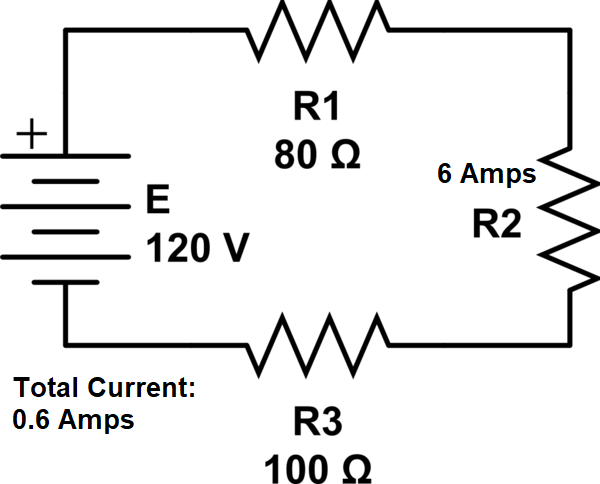

When considering the basics of electronics, 3 main things come to mind. Ohm's law, soldering, and electrical components. This part of the website will introduce you to these 3 things.
This is for series circuit only.
Ohm's Law
What is Ohm's Law?
In it's most essential form, Ohm's Law is the sets of formulas used to calculate the different factors in a circuit. This includes total resistance, total voltage, total amperage, amperage across a resistor and much more.
Formulas
Below is a table outlining the basic formulas.
Where A=Amps, V=Volts, W= Watts and R=Resistance...
Current
Volts
Resistance
Power
A = (P/R)1/2
V = R * A
R = V/A
W = V2/R
A = P/V
V = P/A
R = V2/P
W = R * A2
A = V/R
V = (P * R)1/2
R = P/A2
W = V * A
At = Vt/Rt
Vt = VR1+VR2+...
Rt = RR1+RR2+RR3+...
Wt = At * Vt
Application in Electronics
Very often, Ohm's Law is used to determine missing values for resistance and such. Let's do a problem.

Taking a look above, we can see that the resistance of R2 is missing. First, let's take a look at R2. The current across it is 6 Amps. With this, we can determine resistance. So, we apply the formula R = V/A. That would give us R = 120/6. This equates to 20, which is our answer. 20 Ω.
Soldering
What is Soldering?
In it's simplest form, soldering is the melting of metal to other components to keep them in place.
How It's Used
It is used in all forms of electronics, from industrial robots, to a simple calculator.
How to Solder
Watch the video below to learn how to properly solder.
Electrical Components
Conductors
These are the components that make up most electrical components. These are typically made out of conductive metals like copper, aluminum, gold and silver. These act as a means of transferring electricity to other components. These include, but are not limited to:
Wires
Capacitors
Resistors
Diodes
Switches
Resistors
These components act as a means to reduce the current going through a circuit. These are used extremely often in a large variety of components. In general, they follow a 4 band color pattern, as per the chart below.
Diodes
Diodes are, in essence, are one way pathes for current to travel along. There is not really much to say about these, other than they have two contact points, cathode and anode.
Capacitors
Capacitors, per the name, hold a charge up to the maximum it can hold, and then releases it. These are typically used for timed circuits, like a blinker. Their max charge is determined in micro farads.
Power Supplies
Per the name, these supply power to the circuit. They are typically measured in volts and work relatively the same as each other. These can include batteries, USB power cords, and power banks.